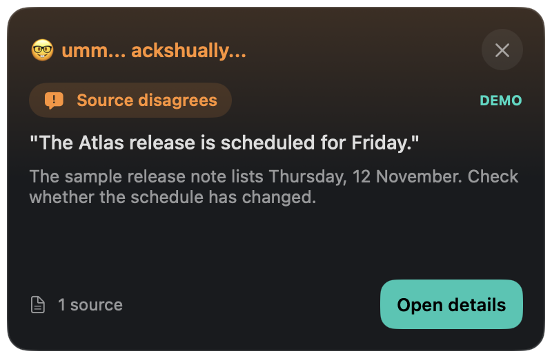

Live fact checking · macOS
Ackshually...
A fact-check that pops up while you're still talking.
A menu-bar app that listens to a Slack huddle, a YouTube video or any app playing audio, checks the claims it hears against your notes or the public web, and shows a correction when a source disagrees.
Download for MacNot available for Intel Macs, iPhone, or iPad.
Installation instructions
01 / Getting started
Install on your Mac
- Download and open the ZIP file.
- Drag Ackshually.app into your Applications folder, then open it. The ☝️ appears in the menu bar.
- Click Demo to see a simulated correction. It uses no microphone, audio capture or network.
- Open settings with the sliders button and add your own OpenRouter or OpenAI API key. Requests are billed to your provider account. The key is stored in your Mac's Keychain.
- Click Start and allow Screen & System Audio Recording and Speech Recognition when macOS asks. Microphone access is needed only if you include your own voice.
macOS may block the first launch
This build is ad-hoc signed and is not notarized by Apple. If you trust this download and macOS blocks it, follow Apple's instructions for opening an app from an unidentified developer. Keep your Mac's security protections enabled.
02 / Everyday use
Pick a source. Start. Close the panel.
Choose All system audio, or refresh the source list and pick one app such as Slack or your browser. Then choose where evidence comes from: Documents only, Public web, or References + web.
For documents, use Add files… or Connect folder…. Text and Markdown files are read, so an Obsidian vault works as a reference library.
Close or collapse the panel and corrections keep arriving as small toasts in the top-right corner. When a Slack huddle or call starts, Ackshually... offers to start checking. Nothing is captured until you accept.
Use Reset context after skipping around in a video. Stopping or quitting ends listening; ending a call does not.
03 / Privacy
What leaves your Mac.
Raw audio stays on your Mac. Speech is transcribed on device.
Selected transcript snippets and claims go to the model provider you configure. With documents enabled, matching passages from your notes go to that provider too. Public-web mode sends spoken claims to web search, and your notes are never included in those searches.
Transcripts and findings are never saved to disk. The panel and toasts can show up if you share your whole screen, so share a single window instead.
04 / Release
Version 0.1.1
This is an early prototype. Findings are AI assessments and can be wrong, and accuracy has not been benchmarked. Open the source before relying on a correction. This release fixes the Slack call prompt cutting off its Start checking button.
Back to tools